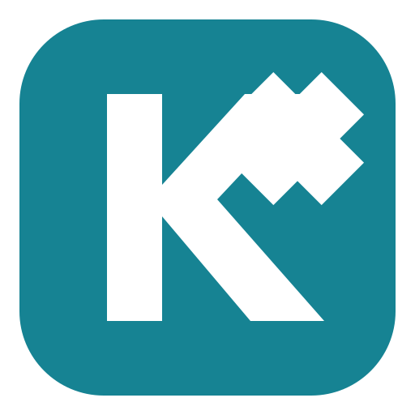
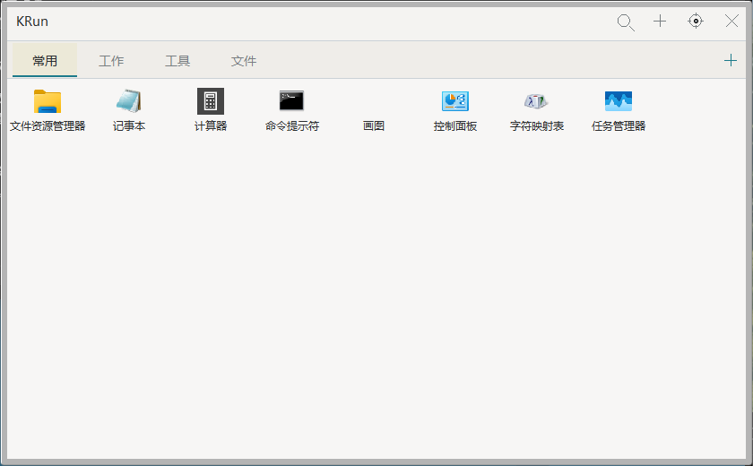
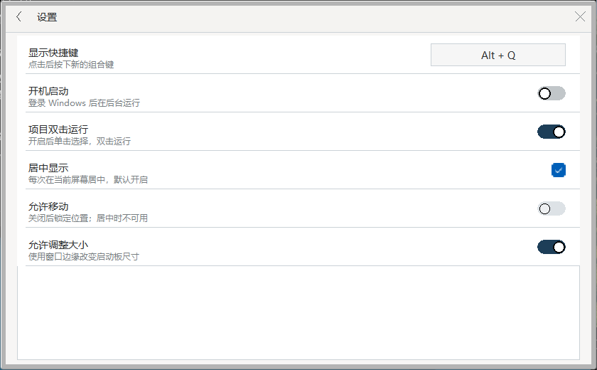
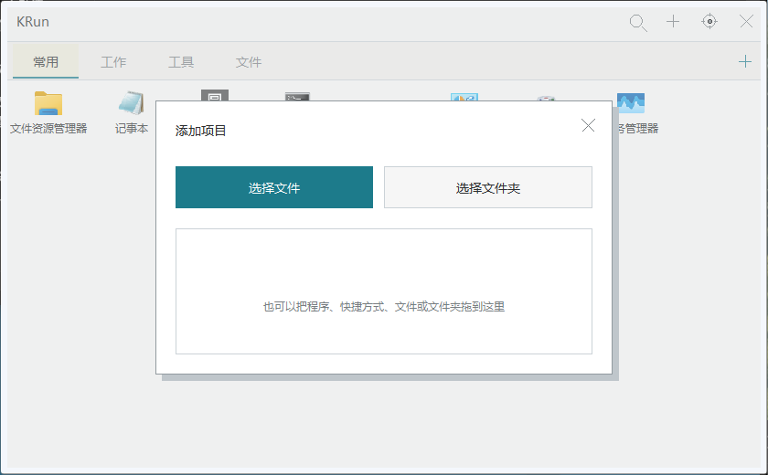

原生，也简单。
Rust 与 Windows 原生 API 构建。没有浏览器内核，不需要额外 GUI 运行环境。

KRunFOR WINDOWS小巧原生 · 开源免费 · 为 Windows 而生
应用、文件、文件夹，收进一个安静的启动板。
按下 Alt + Q，回到你的工作节奏。
Windows 10 / 11 · x64 · 解压即用

01 / 上手，不用想太多
切换分类、输入搜索，再点开设置。
在浏览器里，感受 KRun 的交互节奏。
没有匹配的项目，换个关键词试试。
以下开关仅改变演示，不修改电脑设置。
02 / 恰到好处
Rust 与 Windows 原生 API 构建。没有浏览器内核，不需要额外 GUI 运行环境。
自由分类，拖入程序与文件。搜索已添加项目的名称和路径，让常用内容各就各位。
解压即用。配置保存在程序旁的 launcher.json，随文件夹迁移，不依赖在线账户。


让下一次开始，更轻松。
便携版 · 免费开源 · 无需账户